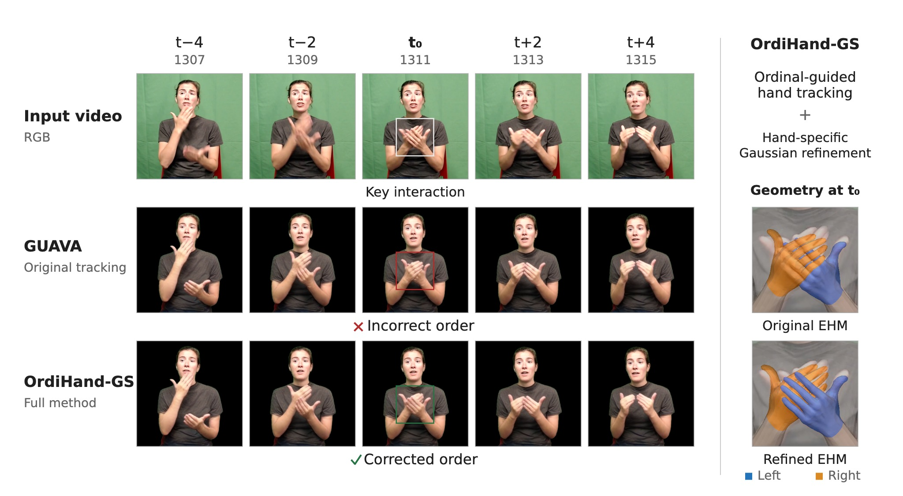
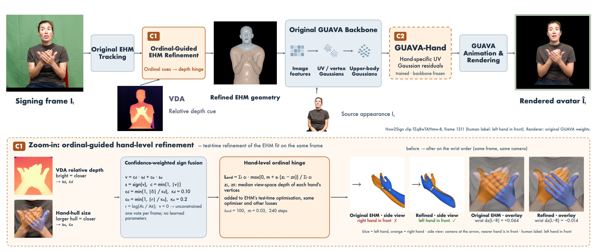
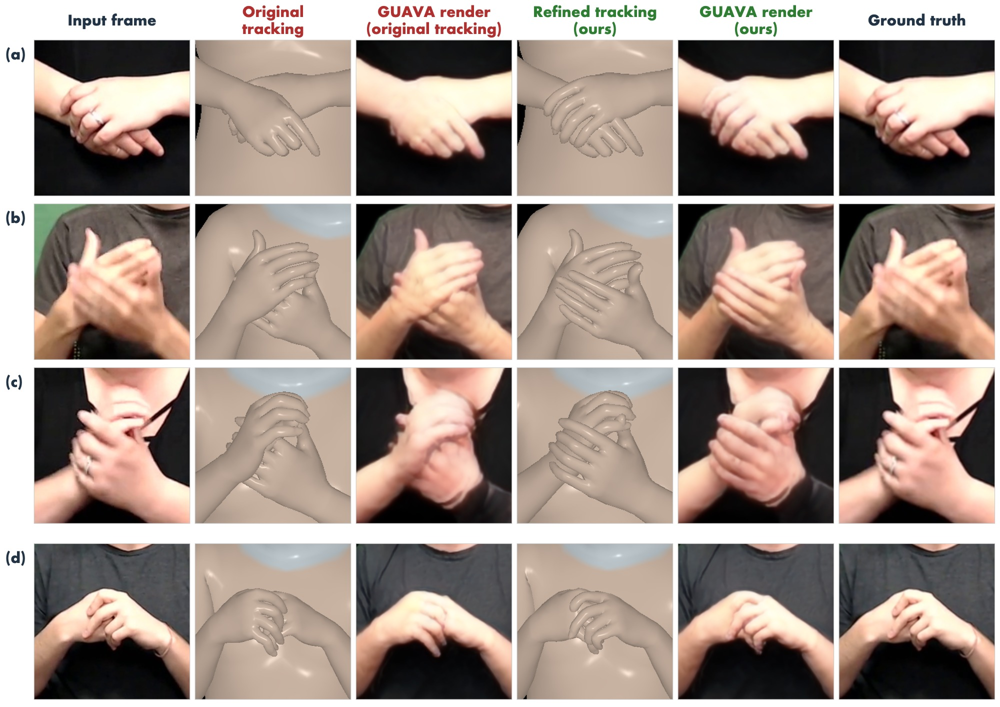
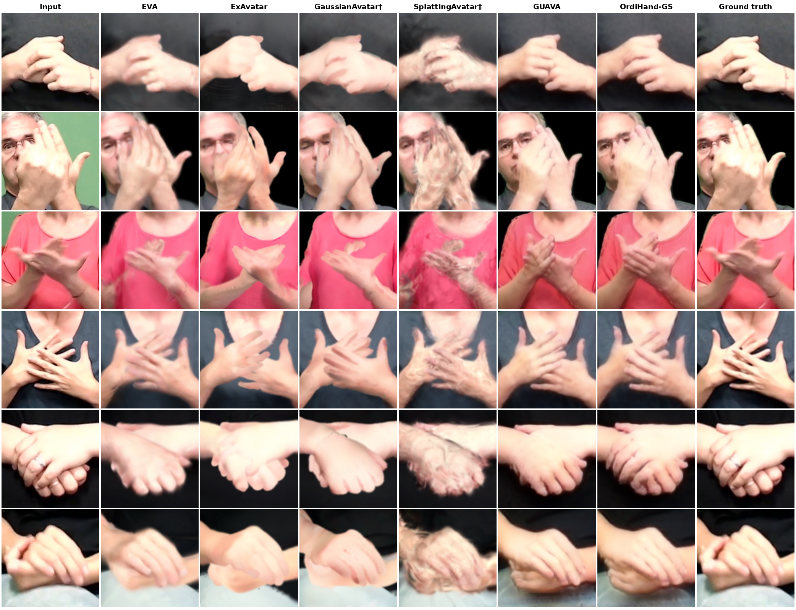
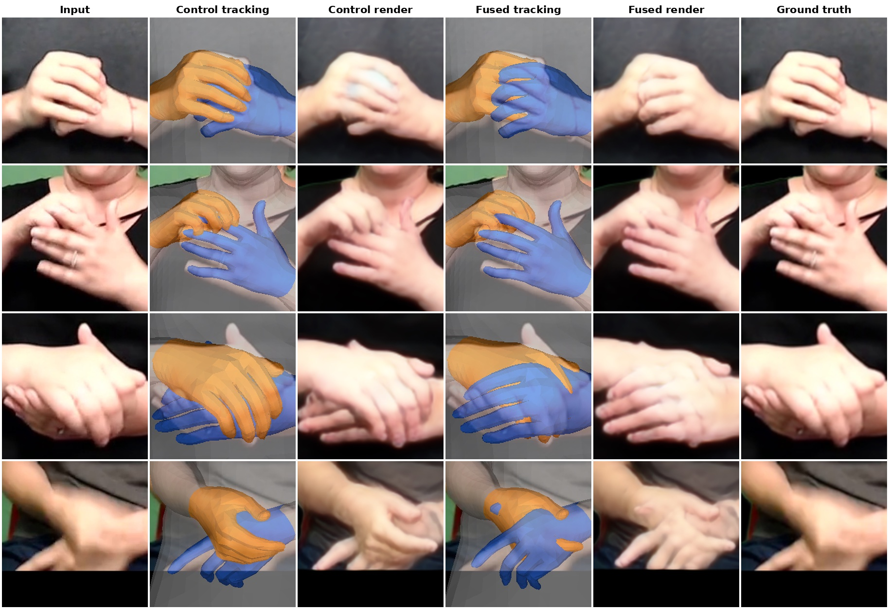

arXiv preprint

Digital signers, also known as signing avatars, convey sign language through animated virtual humans, where visual fidelity and linguistic intelligibility hinge primarily on the hands. When one hand crosses over the other, two failure modes dominate. First, monocular expressive-human tracking suffers from ordinal depth ambiguity: either hand can satisfy the same 2D landmarks, and the baseline tracker orders wrists at chance level on 365 annotated overlapping frames from How2Sign. Second, hand appearance remains blurred in neural rendering even after geometry is corrected.
We propose OrdiHand-GS to address these errors separately. Relative depth from a video depth estimator and apparent hand size vote, with confidence weighting and abstention, for a front–back relation, which enters expressive-human tracking as a hinge on median hand-surface depth. A source-conditioned residual head then refines the local positions of hand-associated UV Gaussians with the avatar backbone and renderer frozen. We instantiate the framework with GUAVA. Against matched unconstrained refinement, wrist-order accuracy rises from 32.9% to 77.3% at a cost of 0.39 pixels of reprojection error, while a random-sign placebo gives no balanced-accuracy gain. A 2×2 factorial evaluation attributes most of the interaction-rendering improvement to tracking-stage refinement, with a smaller additional benefit from the residual.

| Tracking arm | Accuracy (%) | Balanced acc. (%) | Δ acc. vs. control | Corrected | New errors |
|---|---|---|---|---|---|
| Original EHM | 33.4 [28.1, 39.1] | 49.8 [46.4, 52.7] | — | — | — |
| Matched control | 32.9 [27.5, 38.3] | 48.9 [45.5, 52.0] | 0 | — | — |
| Random-sign placebo | 42.2 [37.2, 47.6] | 48.6 [43.5, 53.7] | +9.3 [3.7, 15.0] | 71 | 37 |
| VDA hinge only | 67.1 [62.2, 71.7] | 67.4 [61.9, 72.5] | +34.2 [27.0, 41.3] | 156 | 31 |
| Area hinge only | 73.7 [68.4, 78.4] | 74.9 [69.5, 79.9] | +40.8 [33.6, 47.9] | 174 | 25 |
| Fused (OrdiHand-GS) | 77.3 [72.1, 81.5] | 76.9 [71.5, 81.7] | +44.4 [36.9, 51.6] | 184 | 22 |
95% clip-clustered bootstrap intervals in brackets. All arms resume the same original EHM fit with the same optimizer, seed, frames and budget. Randomizing the signs raises raw accuracy but leaves balanced accuracy at chance, so the gain comes from the sign information rather than from constraining itself.
| Arm | Fused tracking | Hand residual | LPIPS ↓ | SSIM ↑ | PSNR ↑ | L1 ↓ |
|---|---|---|---|---|---|---|
| C0 (GUAVA) | – | – | 0.3174 | 0.7055 | 16.91 | 0.0897 |
| C1 | yes | – | 0.3065 | 0.7146 | 17.35 | 0.0865 |
| C2 | – | yes | 0.3155 | 0.7092 | 17.07 | 0.0881 |
| C3 (OrdiHand-GS) | yes | yes | 0.3047 | 0.7185 | 17.50 | 0.0851 |
Most of the interaction-rendering gain comes from the tracking stage (C1 vs. C0); the hand residual adds a smaller, consistent improvement on either tracking. The two effects are close to additive, so no synergy is claimed.
| Full frame | Interaction crop | Hand crops | |||
|---|---|---|---|---|---|
| Method | LPIPS ↓ | LPIPS ↓ | SSIM ↑ | PSNR ↑ | LPIPS ↓ |
| EVA | 0.0940 | 0.3237 | 0.6942 | 16.51 | 0.3467 |
| ExAvatar | 0.1145 | 0.3510 | 0.6873 | 16.08 | 0.3793 |
| GaussianAvatar† | 0.1058 | 0.3435 | 0.6686 | 15.26 | 0.3641 |
| SplattingAvatar‡ | 0.1252 | 0.3627 | 0.6825 | 17.35 | 0.3822 |
| GUAVA | 0.0986 | 0.3190 | 0.7064 | 16.95 | 0.3454 |
| OrdiHand-GS | 0.0977 | 0.3026 | 0.7209 | 17.60 | 0.3236 |
127 annotated frames from 60 How2Sign clips. Per-subject methods are fitted to 140 frames of each clip; GUAVA and OrdiHand-GS use one reference image. † SMPL-X adapted, stage 1. ‡ SMPL-X mesh. Per-subject methods lead on the full frame; OrdiHand-GS is best on every interaction and hand metric, although its PSNR gains over SplattingAvatar are not statistically significant.


All panels come from the fits, renders and checkpoints evaluated in the paper: weights are frozen and no optimization is run against any test frame. Fused tracking exists only on nine-frame windows around annotated frames, so moving segments are such windows played at 0.25× speed.

R. Zuo was supported by EPSRC Project GNOMON (EP/X011364/1) and Turing AI Fellowship (EP/Z534699/1). The authors acknowledge the use of resources provided by the Isambard-AI National AI Research Resource (AIRR). Isambard-AI is operated by the University of Bristol and is funded by the UK Government’s Department for Science, Innovation and Technology (DSIT) via UK Research and Innovation; and the Science and Technology Facilities Council [ST/AIRR/I-A-I/1023].